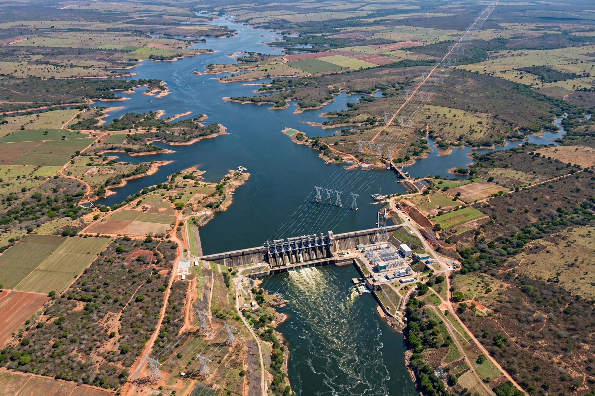

Tocantins River
| Tocantins River | |
 | |
| Country | Brazil |
|---|---|
| Length | c. 2,450 km |
| Source | Central Brazilian plateau, Goiás |
| Mouth | Pará River / Atlantic near Belém |
| Main tributary | Araguaia River |
The Tocantins River (Portuguese: Rio Tocantins) is a major river in Brazil, about 2,450 km long, flowing generally north from the central plateau of Goiás through the state of Tocantins and into the state of Pará, where it joins the Pará River estuary south of the Amazon's mouth near Belém. Its name is traditionally derived from a Tupi phrase meaning "toucan's beak".
Course
The Tocantins rises in the highlands of Goiás and is joined by its greatest tributary, the Araguaia, near the border of Tocantins, Pará, and Maranhão. The confluence region around Bananal Island is a vast seasonal floodplain. Downstream, the river passes Marabá and the Tucuruí dam before reaching the tidal zone.
Development
The river hosts some of Brazil's largest hydroelectric plants, notably Tucuruí (inaugurated 1984, among the world's largest at the time) and Lajeado near Palmas, whose reservoir forms the lake beside the Tocantins state capital. The river is used for navigation in stretches and is central to plans for a Tocantins–Araguaia waterway.
See also
Recreated from memory as a standalone page.